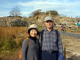

| ２０１４．１．１ あけましておめでとう 例年通り 年賀会からはじまりました 新年が無事迎える事が出来ること 毎朝目覚める事が出来ること、 何気なく過ごしていたことが、有難いと感じるようになりました 毎日を大切に過ごしていきたいと思います |
||
| ２０１４．１．２６ 宮島弥山初詣を兼ねて山あるき 参拝をすませ、大聖院コースを登り、頂上の新しくなった展望台に上がり もみじ谷へ降りる 二人とも体力筋力の衰えを感じながらも何とか制覇 日頃からもう少し歩かなければと実感 頑張らねば！！ |
||
| ２０１４・２・２３ 母誕生日祝い ２/１４満８８歳を迎えたお祝いに娘３人と広島グランドプリンスホテルへ一泊旅行 遠くには行けなくなりましたが、一緒に出かける事が出来るのは嬉しいことです 動きは鈍くなり、本当に歳をとったと実感しますが、本人が自覚しないのが心配なところです。 まぁ 今更どうしようもないかな？！ますます ひとの話に耳をかす事が出来なくなっているし・・・・ 妹たちの誕生日の頃にまた行きたいと思う元気があるので有難いことで・・・、まぁいいか～ |
||
| ２０１４・３・１ ひな祭りお祝い 愛奈ちゃんのひな祭りと称して松江に出かけました お雛さんのケーキを皆で食べてお祝いしました。 愛奈ちゃんの湿疹も落ち着いて綺麗な顔になり安心しました。 お兄ちゃんの翔太くんも大きくなり、じぃじにおもちゃを買ってもらい大喜びでした ４月から、また転勤で大変ですが、元気で頑張ってもらいたいと思います |
||
| ２０１４．３．２９ 引越～美又温泉 息子たち家族 松江から浜田へ引越 手伝いに出かける 孫も二人になり、トラック２台の大荷物 小さい子がいるとなかなか片づけも大変 邪魔にならないように、子守りに徹する 帰りに美又温泉による。松江の時の玉造温泉や、イチジク温泉も良かったけど、 美又温泉もとろ～り、つるつるでいぃ湯です(＠_＠;) やみつきになりそうです！！ |
||
| ２０１４・５・９ 母デイサービスへ 母は介護認定を受け、要支援Ⅰを認定 熊野町新宮の”ヒロエの杜”に毎週金曜日に行く事になる 大した親だとつくづく感嘆！自分で申請の手続きをし、お友達のいる介護施設にさっさと申し込むなんて、脱帽！ ボケて迷惑を掛けるようにならない為にと必死の様子・・・・・いつまでも元気で頑張って下さい 私も母に負けないように、元気で長生きできますように・・・・・ |
||
| ２０１４・５・２８～５・３１ 星野リゾートに泊まる充実の東北ゆとりの４日間（読売旅行） 山好き・温泉好きの私たち夫婦にとっておきのプランのツァーに参加 久々の広島空港から出発 ⇒ 角館 ⇒ 田沢湖 ⇒ 世界遺産中尊寺 ⇒ 八幡平 ⇒ 世界遺産白神山地 ⇒ 十和田湖 ⇒ 奥入瀬渓流 ⇒ 八甲田山 ４日間ともお天気に恵まれ 秋田美人の上手なガイドさんと縁があり、本当に充実した思い出深い旅行になりました。 |
||
| |
||
| ２０１４・６・６～６・８ 大山夏山開き 今年も孫と一緒に大山夏山開きに出かけました。去年までの松江からと違い、大山が遠くなりました。 夏山開きは、６月第一土曜日と決まっていますが、金曜日は美又温泉に寄り、土曜日朝一に迎えに行きました。 お昼に大山到着では時間も少なく、今年も大山寺から元谷までの散策で終わってしまいました。 いつか頂上制覇したいのですが・・・・・でもことしは、大山泊だったので、松明行列は見る事ができました。 それと新発見！！ 去年１１月より温泉がオープンしていました”大山豪円の湯”孫も源泉のぬるい湯が お気に入りでした。大山に行く楽しみが増えました（*^_^*） |
||
| ２０１４・７・１１ しょうたん６才誕生日祝い 孫の成長は本当に早いもので、６才になりました 浜田に喜びいさんで出かけました 孫の成長をいつまでも見守ることができますように！！ |
||
| ２０１４・９・２７ 御嶽山噴火 ８月２０日の広島市の土砂災害に続いて 昼前に御嶽山の水蒸気爆発 大勢の犠牲者がでました 自然災害が続きます ２０１１年に登ったことを思い出しました。私たちにとっては、初の３，０００ｍ越えの山 青空の下での二人の写真を出してみました 信仰の山で、気持ちよく登った山だったのに・・・・・ |
||
| ２０１４・１０・５ しょうたん運動会in浜田 孫の通う石見幼稚園の運動会応援に出かける 前日 浜田の国民宿舎千畳苑に宿泊予約していましたが、しょうたんは一緒にきてくれませんでした ちょっと淋しかったですが、成長したんだと嬉しくもあり・・・・ 運動会は、松江の幼稚園よりも内容が濃く、親からじいちゃん・ばあちゃんまで出番があり、 カメラマンも忙しい楽しい運動会でした。自己満足ですが、なかなかのアルバムが出来ました！！ |
||
| ２０１４・１０・１２ 豆パーティー 我が家の畑で採れた黒豆の枝豆中心のパーティ 今年もすることができました 良かった！! 良かった！！ ビールで乾杯！！ 美味しいつまみになります 会社を退職しても お付き合いして下さることが、本当にうれしいです（*^_^*） |
||
| ２０１４・１０・２１～２２ 東京スカイツリー ＮＰＯ法人の会計のお仕事を頂き 引継ぎに東京まで行くことになりました 日帰りではきついという事で、前日から出発することになり、スカイツリー見学に お仕事の話だけでも、有難いのに楽しませていただきました。 仕事で御恩返しができるように、頑張ろう！！ |
||
| ２０１４・１１・８～９ 愛奈ちゃん誕生日祝いin津和野 愛奈ちゃんの誕生日会を、慶くんの会社の保養所に指定されている 津和野わたや旅館に 招待され、じいちゃん・ばあちゃん・じぃじ・ばぁば 揃って出かけました。 津和野散策 お稲荷さん参拝 温泉 誕生ケーキ おいしいお料理 もちつき大会 と 思い出に残る誕生会になりました。 すくすくと 元気に大きくなりますように！！ |
||
| ２０１４・１１・２０ 竹田城跡ウォーク  |
中国新聞ﾄﾗﾍﾞﾙを利用しての竹田城跡ウォーク 天空の城が見られるのは、年１０回あるか？ないか？ 見る場所も違う事が行ってみて発覚 あまりの人気で石垣や景観が壊れている感じでした |
|
| ２０１４・１２・１４ しょうたん幼稚園生活発表会 浜田石見幼稚園生活発表会 寒い朝 浜田道は、冬用タイヤ装着規制が出ていましたが、無事幼稚園へ 合奏・劇・石見神楽と見どころも多く楽しませていただきました。 園児も皆さんしっかりとして、上手でした。先生方も良く指導されたと感動しました。 みんな よく がんばったね と拍手喝采でした （●＾o＾●） |
||
| ２０１４・１２・３１ 平成２６年大晦日 世の中 暮らしにくい時代になったと感じたり、自然災害も起きたりでしたが、 我が家は、何とか無事に過ごす事ができ、平和な一年でした。 母もデイサービスに行く様になりましたが、お友達も一緒で、週１回を楽しみにしています。 「いつ死んでもいいけど、楽しいからもうちょっと生きたいかな」と言っています。 元気の源なんだと思います。何よりです。感謝 感謝です。 来年も、良い年になりますように！！ |
||